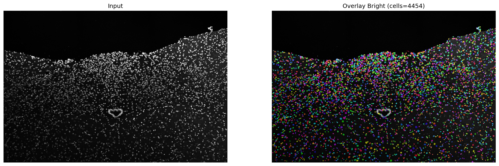
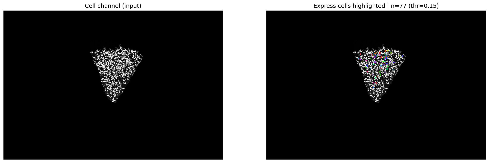
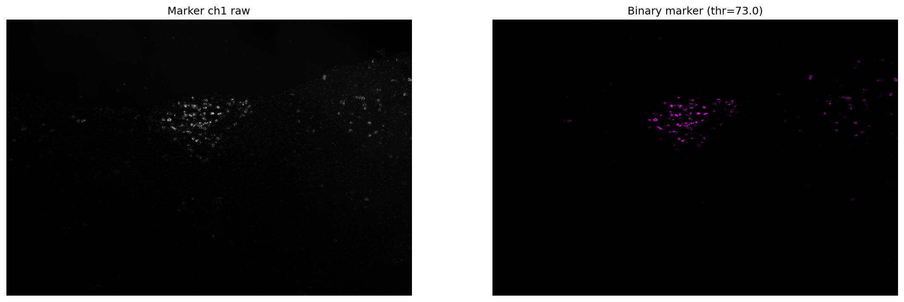

CocoFluo Cell Fluorescence Image Analysis System
Automated bioimage analysis pipeline for confocal microscopy images, including single-cell instance segmentation, fluorescence marker extraction, express-cell quantification, and colocalization analysis at individual cell level.
Overview
Cocofluo is an automated bioimage analysis pipeline designed for multi-channel confocal fluorescence microscopy images. It treats each segmented cell as an independent analysis unit, allowing fluorescence marker expression and colocalization to be quantified at the single-cell level rather than only at the whole-image level.

Marker Extraction
The pipeline first performs cell instance segmentation using a structural channel such as DAPI or a cell-body channel. For each fluorescence marker channel, it extracts marker-positive regions through configurable thresholding and measures the marker-positive area within each segmented cell. A cell is counted as expressing a marker when the marker-positive area exceeds a defined fraction of the cell area.

Single-Cell Quantification
Based on these per-cell measurements, Cocofluo reports the number of detected cells, marker-expressing cells, and cells showing two-way or three-way marker colocalization. The system also generates CSV summaries and quality-control visualizations, including segmentation overlays, marker extraction masks, and highlighted marker-positive cells, making the analysis pipeline easier to inspect and validate.
